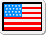
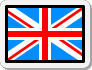

Cognates and false cognates
Cognates /ˈkɑːɡ.neɪts/
English
Portuguese
accident
acidente
alarm
alarm
camera
câmera
caravan
caravana *Trailer

city
cidade
commence
começar
converse
conversar
criticism
criticismoo
elevator
elevator
emotion
emoção
eternity
eternidade
family
famíliar
identity / ID
identidade
intelligent
inteligente
intelligence
inteligência
nation
nação
organization
organização
patient
paciente
patience
paciência
pharmacy
farmácia
precipice
precipício
present
presente
present
apresentar
problem
problema
radical
radical
solicit /səˈlɪs.ɪt/
solicitar
telephone
telefone
tourist
turista
xxx xxx
xxx
xxx
xxx xxx • xxx
False cognates /fɑːls ˈkɑːɡ.neɪts/
English
 Portuguese
Portuguese
Portuguese
 English
English
actually /ˈæk.tʃu.ə.li/
na verdade, realmente • So what actually happened? O que
realmente aconteceu?
atualmente
currently /ˈkɝː.ənt/ • The device is
currently
available only in Japan.
adept /əˈdept/
especialista, profundo conhecedor
adepto
supporter /səˈpɔːr.t̬ɚ/ (apoiador)
follower/ˈfɑː.loʊ.ɚ/ (seguidor)
advert /ˈæd.vɝːt/
propaganda, anúncio
advertir
advise /ədˈvaɪz/
warn /wɔːrn/
agenda /əˈdʒen.də/
pauta do dia
agenda
diary /ˈdaɪə.ri/
planner /ˈplæn.ɚ/
alias /ˈeɪ.li.əs/
codinome
aliás (a propósito, por sinal)
by the way
alumnus /əˈlʌm.nəs/
ex-aluno • I’m an alumnus of the University of London. I
graduated in 2001.
aluno
student /ˈstuː.dənt/ / pupil
/ˈpjuː.pəl/
amass /əˈmӕs/
juntar, acumular
amassar
crush /krʌʃ/
smash (esmagar) /smæʃ/
knead (sovar) /niːd/
anthem /ˈæn.θəm/
hino
antena
antenna /ænˈten.ə/
anticipate /ænˈtɪs.ə.peɪt/
prever; aguardar, ficar na expectativa • The police anticipate trouble
at the protest march.
antecipar
to bring forward, to move forward
apology /əˈpɑː.lə.dʒi/s
pedido de desculpas
apologia
to speak in favor of • Former U.S. Attorney to Speak in Favor of
Marijuana Legalization and Taxation Bill.
 to make an apology for
to make an apology for
application
inscrição • a job / college / membership application
uso • Carpentry required the application of the geometry he had
studied years before.
pedido • His application for a loan was rejected.
aplicação
financial investment
appoitment /əˈpɔɪnt.mənt/
comprimisso
apontamento
note /noʊt/
argue /ˈɑːrɡ.juː/
discutir
argumentar
discuss /dɪˈskʌs/
assist /əˈsɪst/
auxiliar, dar supporte • I was asked to assist with the task.
assistir
watch /wɑːtʃ/ • I never
watch TV.
attend /əˈtend/ • I attended the
parents and teachers meeting last Saturday.
assume /əˈsuːm/
presumir, supor • Many people
assume that a tie indicates a person of authority.
 assumir
assumir
take responsibility, take over as "CEO" = assumir um cargo
attend /əˈtend/
participar, frequentar • Are you confident that enough people will
attend the event?
atender
answer /ˈæn.sɚ/ • Could you
answer the phone, please?
audience /ˈɑː.di.əns/
platéia, público
audiência
hearing /ˈhɪr.ɪŋ/
balcony /ˈbæl.kə.ni/
sacada
balcão
counter /ˈkaʊn.t̬ɚ/ • We stacked the
dirty plates on the kitchen counter.
balance /ˈbæl.əns/
equilíbrio
balança
+

scale
/skeil/
+

scales /skeilz/
 escala = stop-over /stɑːp ˈoʊ.vɚ/
escala = stop-over /stɑːp ˈoʊ.vɚ/
 escalar = climb /klaɪm/
escalar = climb /klaɪm/
baton /bəˈtɑːn/
bastão, cacetete; batuta (música)
/ˈbæt.ɒn/
batom
lipstick /ˈlɪp.stɪk/
beef /biːf/
carne bovína
bife
steak /steɪk/
brave /breɪv/
corajoso(a)
braveheart (coração valente)
bravo
angry /ˈæŋ.ɡri/
braces /breɪs.ɪz/
aparelho dentário
braços
arms /ɑːrmz/
cafeteria /ˌkæf.əˈtɪr.i.ə/
refeitório
cafeteria
cafe /kæfˈeɪ/
carton /ˈkɑːr.t̬ən/
caixa de papelão
 cardboard = papelão
cardboard = papelão
cartão
card /kɑːrd/
casualty /ˈkæʒ.uː.əl.ti/
baixa (morte), fatalidade
casualidade
meet somebody by chance (encontrar alguém por casualidade)
commodity /kəˈmɑː.də.t̬i/
mercadoria
comodidade
comfort /ˈkʌm.fɚt/
competition /ˌkɑːm.pəˈtɪʃ.ən/
concorrência
competição
contest /ˈkɑːn.test/
comprehensive
/ˌkɑːm.prəˈhen.sɪv/
abrangente, amplo
compreensivo
understanding /ˌʌn.dɚˈstæn.dɪŋ/
cigar /səˈɡɑːr/
charuto
cigarro
cigarette /ˈsɪɡ.ə.ret/
college /ˈkɑː.lɪdʒ/
faculdade
colégio
school /skuːl/
collar /ˈkɑː.lɚ/ •
gola, colarinho; coleira
white collar
blue collar
colar
necklace /ˈnek.ləs/
compromise /ˈkɑːm.prə.maɪz/
entrar em acordo, fazer concessão
compromisso
appointment /əˈpɔɪnt.mənt/ •
confident /ˈkɑːn.fə.dənt/
confiante
confidente
confidant /ˈkɑːn.fə.dænt/
trusted
person
convict /kənˈvɪkt/
preso
convicto(a)
certain /ˈsɝː.tən/ • I feel
certain (that) you're doing the right thing.
convenient prático
/kənˈviː.ni.ənt/
conveniente
appropriate /əˈproʊ.pri.ə
coroner /ˈkɔːr.ən.ɚ/
legista
coronel
colonel /ˈkɝː.nəl/
costume /ˈkɑː.stuːm/
fantasia
• The children were dressed in Halloween costumes.
costume
• I usually wake up at 6.
• I have a habit of reading in bed before sleeping,
• Occasionally, I have lunch at my mom's.
• I take the bus on a regular basis
data /ˈdeɪ.t̬ə/
(banco de) dados
• Those data show that the prices are falling.
data
date /deɪt/
I'd like to fix a date for our next meeting.
 tâmara • Dates are one of my favourite fruits.
tâmara • Dates are one of my favourite fruits.
 encontro • James is late for his date.
encontro • James is late for his date.
deception /dɪˈsep.ʃən/
fraude, enganar
decepção
disappointment /ˌdɪs.əˈpɔɪnt.mənt/
dent /tuːθ/
amassado (caro
batido)
dente
tooth
disgrace /dɪsˈɡreɪs/
vergonha, desonra
desgraça
disaster (disastre) /dɪˈzæs.tɚ/
misfortunte (infelicidade)
/ˌmɪsˈfɔːr.tʃən/
design /dɪˈzaɪn/
projetar; modelo
designar
designate /ˈdez.ɪɡ.neɪt/
appoint /əˈpɔɪnt/
devolve /dɪˈvɑːlv/
transmitir (responsabilidade)
devolver
give something back to someone
diversion /dɪˈvɝː.ʃən/
desvio
 /daɪˈvɜː.ʃən/
/daɪˈvɜː.ʃən/
diversão
fun /fʌn/
editor /ˈed.ɪ.t̬ɚ/
redator
(encarregado de produzir conteúdos e encaminhá-los para a
aprovação do Editor)
editor
publisher
(encarregado de publicar conteúdos no site e de avaliar
os conteúdos produzidos pelos Redatores)
educated /ˈedʒ.ə.keɪ.t̬ɪd/
alto nível de escolaridade,
pessoa culta
• She was probably the most highly educated prime minister of
this century.
educado(a)
polite /pəˈlaɪt/ • He's usually quite
polite in my presence.
• John's children are very well behaved / mannered.
•
Mary had a good upbringing. (criação)
emission /iˈmɪʃ.ən/
descarga (de gases, etc.)
emissão
issuing (of a document, etc.)
/ˈɪʃ.uː.ɪŋ/
enroll (at) /ɪnˈrəʊl/
se inscrever em um curso / aula
 subscribe to a streaming platform
subscribe to a streaming platform
enrolar
roll /roʊl/, curl
/kɝːl/
 lollygagging /ˈloli ɡæɡ.ɪŋ/ • Stop
lollygagging (Pare de enrolar)
lollygagging /ˈloli ɡæɡ.ɪŋ/ • Stop
lollygagging (Pare de enrolar)
equivocate /ɪˈkwɪv.ə.keɪt/
enganar, mentir, enrolar
equivocar-se
be mistaken, to mistake one thing for another, to unintentionally make
a wrong statement
eventually /ɪˈven.tʃu.ə.li/ finalmente, por fim, consequentemente • Keep trying and you'll find a job eventually.
eventuamente
occasionally /əˈkeɪ.ʒən.əl.i/ • I see
him occasionally in town.
excited /ɪkˈsaɪ.t̬ɪd/
empolgado, animado • Are you getting excited about your holiday?
excitado (sexual connotation)
get aroused /get əˈraʊzd/
• Jeniffer gets aroused when she sees her boyfriend.
exciting /ɪkˈsaɪ.t̬ɪŋ/
empolgante
excitante
thrilling (emocionante)/ˈθrɪl.ɪŋ/
exit /ˈek.sɪt/ /ˈeɡ.zɪt/
saída
êxito
success /səkˈses/
exquisite /ɪkˈskwɪz.ɪt/
refinado, algo belo
esquisito
strange /streɪndʒ/
weird /wɪrd/
expert /ˈek.spɝːt/
perito(a), especialista
esperto, inteligente
smart /smɑːrt/
clever /ˈklev.ɚ/
fabric /ˈfæb.rɪk/
tecido
fábrica
factory /ˈfæk.tɚ.i/
plant /plænt/ = usina
fantasy sonho, imaginação
/ˈfæn.tə.si/
fantasia
costume /ˈkɑː.stuːm/
foosball /ˈfuːz.bɑːl/
pebolim
futebol
soccer /ˈsɑː.kɚ/
football /ˈfʊt.bɑːl/
genial /ˈdʒiː.ni.əl/
agradável, amável
genial
ingenious /ɪnˈdʒiː.ni.əs/
graduate program
curso de mestrado ou doutorado
curso de graduação
undergraduate program
grip /ɡrɪp/
agarrar-se, segurar
gripe
flu /fluː/
hazard /ˈhæz.ɚd/
risco
azar
bad luck /bæd lʌk/
idiom /ˈɪd.i.əm/
expressão idiomática
idioma
language /ˈlæŋ.ɡwɪdʒ/
ingenuity /ˌɪn.dʒəˈnjuː.ə.t̬i/
criatividade
ingenuidade
naivety /naɪˈiː.və.t̬i/
injury /ˈɪn.dʒər.i/
ferimento, lesão, machucado
injúria
insult /ˈɪn.sʌlt/
inscription xxx
gravação em revelo (sobre pedra, metal, etc.)
inscrição
registration, application xxx
intend /ɪnˈtend/
pretender, ter intenção
understtand
entender /ˌʌn.dɚˈstænd/
intoxication /ɪnˌtɑːk.səˈkeɪ.ʃən/
embriaguez
intoxicação, envenenamento
poisoning /ˈpɔɪ.zən.ɪŋ/
jar /dʒɑːr/
pote
pitcher
jarro, leiteira /ˈpɪtʃ.ɚ/
journal /ˈdʒɝː.nəl/
diário
jornal
news /nuːz/ • My father watches the
news every day.
 /njuːz/
/njuːz/
lace /leɪs/
cadarço
renda
laço
bow /boʊ/
bow-tie
lamp /læmp/
abajur, luminária
lâmpada
light bulb /ˈlaɪt ˌbʌlb/
large /lɑːrdʒ/
grande, espaçoso
largo
wide /waɪd/
lecture /ˈlek.tʃɚ/
palestra
leitura
reading /ˈriː.dɪŋ/
legend /ˈledʒ.ənd/
lenda
legenda
subtitle /ˈsʌbˌtaɪ.t̬əl/
library /ˈlaɪ.brer.i/
biblioteca
livraria
book store
location /loʊˈkeɪ.ʃən/
localização
locação
rental (aluguel) /ˈren.t̬əl/
lunch /lʌntʃ/
almoço
lanche
snack /snæk/
mayor
/mer/ /ˈmeɪ.ɚ/
prefeito
maior
bigger
mascara /mæsˈker.ə/
rímel
máscara
mask /mæsk/
moisture /ˈmɔɪs.tʃɚ/
umidade
mistura
mixture /ˈmɪks.tʃɚ/
notice /ˈnoʊ.t̬ɪs/
perceber, notar
notícia
news /nuːz/
/njuːz/
novel /ˈnɑː.vəl/
romance (livro)
 /ˈnɒv.əl/
/ˈnɒv.əl/
novela
soap opera, novella
office /ˈɑː.fɪs/
escritório
offício
profession /prəˈfeʃ.ən/
parents /ˈper.ənts/
pais
Kate's parents are so nice.
parentes
relatives /ˈrel.ə.t̬ɪv/ • My
relatives are visiting today.
 relations /rɪˈleɪ.ʃənz/
relations /rɪˈleɪ.ʃənz/
particular /pɚˈtɪk.jə.lɚ/
especial, específico(ca)
particular
private /ˈpraɪ.vət/
personnel /ˌpɝː.sənˈel/ = employee
pasta /ˈpɑː.stə/
macarrão
pasta
folder /ˈfoʊl.dɚ/
patron /ˈpeɪ.trən/
financiador • The Princess Royal is a well-known patron of
several charities
patrão / chefe
boss /bɑːs/
physician /fɪˈzɪʃ.ən/
médico
físico
physicist /ˈfɪz.ɪ.sɪst/
policy /ˈpɑː.lə.si/
políticas, diretrizes, normas, regras, apólice
polícia
police /pəˈliːs/
prejudice /ˈpredʒ.ə.dɪs/
preconceito
prejudicar
harm /hɑːrm/
 prejuizo = loss
prejuizo = loss
preservative /prɪˈzɝː.və.t̬ɪv/
conservante
preservativo
condom /ˈkɑːn.dəm/
pretend /prɪˈtend/
fingir
• She's not really hurt - she's only pretending.
pretender, destinar
intend /ɪnˈtend/ • The course is
intended for intermediate-level students.
principal /ˈprɪn.sə.pəl/
diretor
• Mike was sent to the principal’s office.
principal
main /meɪn/ • My main concern
about moving to San Fransisco is the cost of housing.
chief /tʃiːf/ • The
chief concern is how to maximize efficiency.
push /pʊʃ/
empurrar
puxar
pull /pʊl/
realize /ˈriː.ə.laɪz/
perceber, notar
• Suddenly I realized
that I was late.
realizar
• The team successfully completed the project.
(virar realiade)
• I hope all your dreams come true.
reclaim /rɪˈkleɪm/
recuperar
reclamar
complain /kəmˈpleɪn/
record /rɪˈkɔːrd/
gravar
 record recorde
/ˈrek.ɚd/
record recorde
/ˈrek.ɚd/
recordar
remember /ˈrek.ɚd/
call /kɑːl/
refrigerant
/rɪˈfrɪdʒ.ə.rənt/
refrigerante
(soda) pop /ˈsoʊ.də pɑːp/
soft drinks /sɑːft drɪŋk/s
resume /rɪˈzuːm/
retomar, reinciar
resumo
summary /ˈsʌm.ɚ.i/
summarize /ˈsʌm.ə.raɪz/ = resumir
summarise
retire /rɪˈtaɪr/
aposentar-se
retirar
withdraw /wɪðˈdrɑː/
scholar /ˈskɑː.lɚ/
erudito
escolar
academic /ˌæk.əˈdem.ɪk/
senior /ˈsiː.njɚ/
sênior, superior hierárquico, veterano
senhor
sir /sɝː/
sensible /ˈsen.sə.bəl/
sensato(a)
sensível
sensitive /ˈsen.sə.t̬ɪv/
shoot /ʃuːt/
atiar; fotografar, filmar
chutar
kick /kɪk/
silicon /ˈsɪl.ə.kən/
silício
silicone
silicone /ˈsɪl.ə.koʊn/
stupid (poor intelligence)
/ˈstuː.pɪd/
idiota, burro. imbecil
estúpido
rude /ruːd/
support /səˈpɔːrt/
apoiar • I think it's important to support local businesses by buying
locally.
torcer para algum time • Which team do you support?
sustentar • The father supports the family with his earnings.
 suportar
suportar
This beam supports the weight of the whole building. (Esta viga
suporta o peso de todo o prédio.)
withstand /wɪðˈstænd/ (aguentar,
resisitir) It's a bridge designed to withstand
earthquakes. (É uma ponte projetada para resistir a terremotos.)
I can't stand lies. (Eu não suporto mentiras.)
I can't take it anymore! (Não consigo mais aguentar isso!)
I can't bear the thought.... (Não consigo imaginar...)
I can't put up with him anymore. (Não consigo mais tolerá-lo!)
You have no idea what I had to endure. (Você não tem ideia do que eu tive que suportar.)
tax /tæks/
imposto
taxa
fee /fiː/ (honorários) • The lawyer
charges a fee for his services. / (entrada) • The
fee for visiting the zoo is cheap.
rate /reɪt/ (preço) • What is your
rate for this service?
valorous /ˈvæl.ɚ.əs/
corajoso
valorizado
valued
feel appreciated (se sentir valorizado)